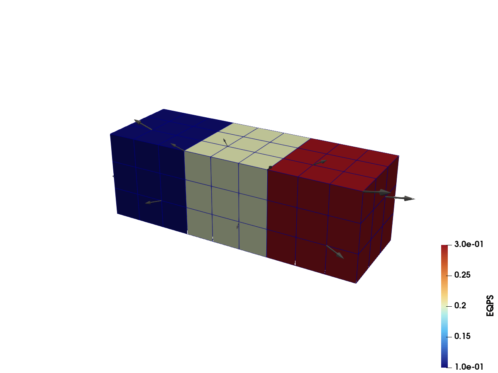

UnstructuredGrid: partitioned mesh
Port of the can-pvtu.vtkhdf example from the VTKHDF specification: an UnstructuredGrid written as three partitions, as a three-rank MPI simulation would produce. Each partition carries point and cell data, and the file also holds a global FieldData array. All partitions land in one file; VTK reads them back as a partitioned dataset.
What you'll learn: how to append partitions with local geometry and data, then recover their global ranges when reading.
The three partitions colored by EQPS, with a few VEL arrow glyphs:


using VTKHDFA block of n³ hexahedra filling a unit cube at origin:
function hex_block(origin; n = 3) corners = vec(collect(Iterators.product(0:n, 0:n, 0:n))) points = [origin[d] + c[d] / n for d in 1:3, c in corners] id(i, j, k) = i + 1 + (n + 1) * (j + (n + 1) * k) cells = vec( [ MeshCell( VTKCellTypes.VTK_HEXAHEDRON, [ id(i, j, k), id(i + 1, j, k), id(i + 1, j + 1, k), id(i, j + 1, k), id(i, j, k + 1), id(i + 1, j, k + 1), id(i + 1, j + 1, k + 1), id(i, j + 1, k + 1), ] ) for i in 0:(n - 1), j in 0:(n - 1), k in 0:(n - 1) ] ) return points, cellsendCreating the file with the VTKUnstructuredGrid() tag defers the geometry; partitions are then appended one by one together with their data.
vtk = vtkhdf_grid(VTKUnstructuredGrid(), "can")for (partition_id, origin) in enumerate(((0, 0, 0), (1, 0, 0), (2, 0, 0))) points, cells = hex_block(origin) velocity = points .- [1.5, 0.5, 0.5] add_partition( vtk, points, cells; pointdata = ("VEL" => velocity,), celldata = ("EQPS" => fill(0.1 * partition_id, length(cells)),), )endvtk["TimeValue", VTKFieldData()] = [0.001]close(vtk)Reading it back
The same file can be opened again with vtkhdf_open:
r = vtkhdf_open("can")VTKHDFReader{ReadUnstructured} (open)Geometry comes back through read_points/read_cells. The partitions are concatenated and the cell connectivity is renumbered to match, so the cells index directly into the returned points.
Each partition contributes 4³ = 64 points and 3³ = 27 cells, so the combined reader exposes 192 points and 81 cells:
size(read_points(r)), length(read_cells(r)) # ((3, 192), 81)((3, 192), 81)Data arrays use the same indexing syntax as writing, and the partition structure is recoverable as index ranges into them:
The three constant partition values span 0.1 through 0.3:
extrema(r["EQPS", VTKCellData()]) # (0.1, 0.3)(0.1, 0.30000000000000004)These ranges show which 27-cell slice came from each partition:
VTKHDF.partition_ranges(r).cells # [1:27, 28:54, 55:81]3-element Vector{UnitRange{Int64}}:
1:27
28:54
55:81close(r)